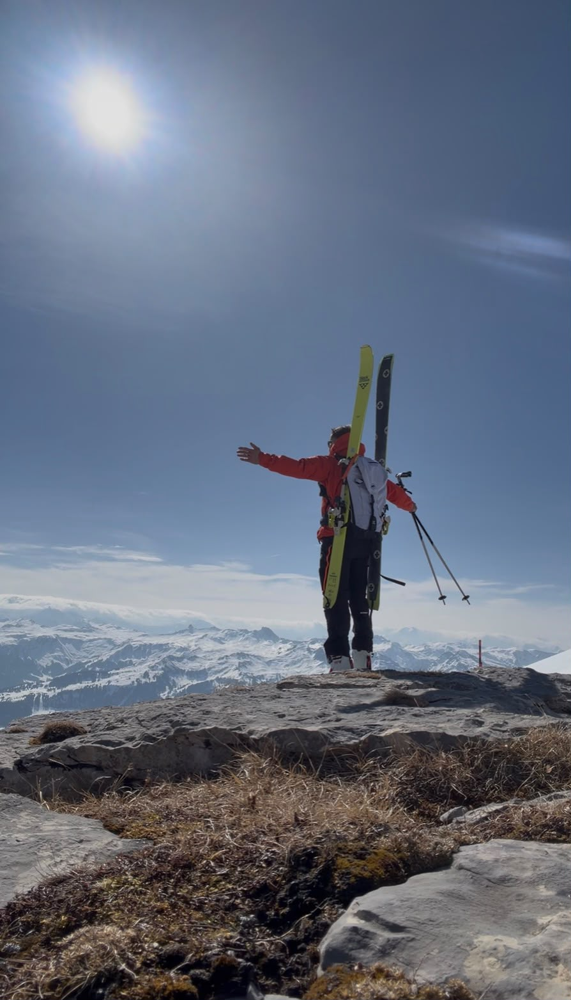
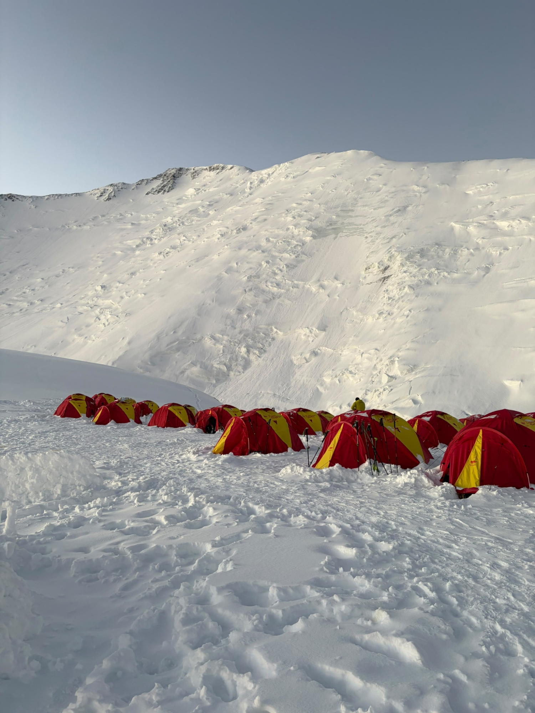
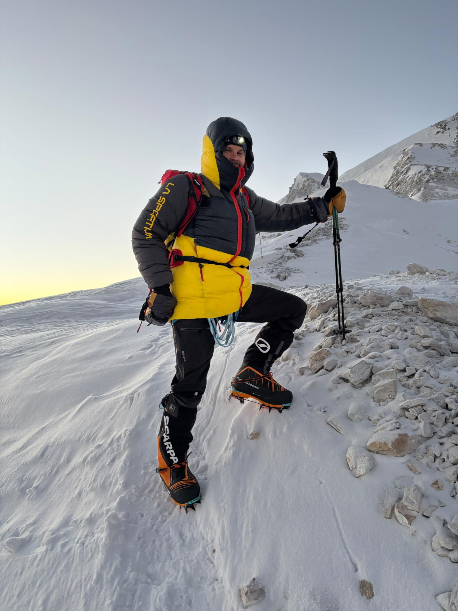
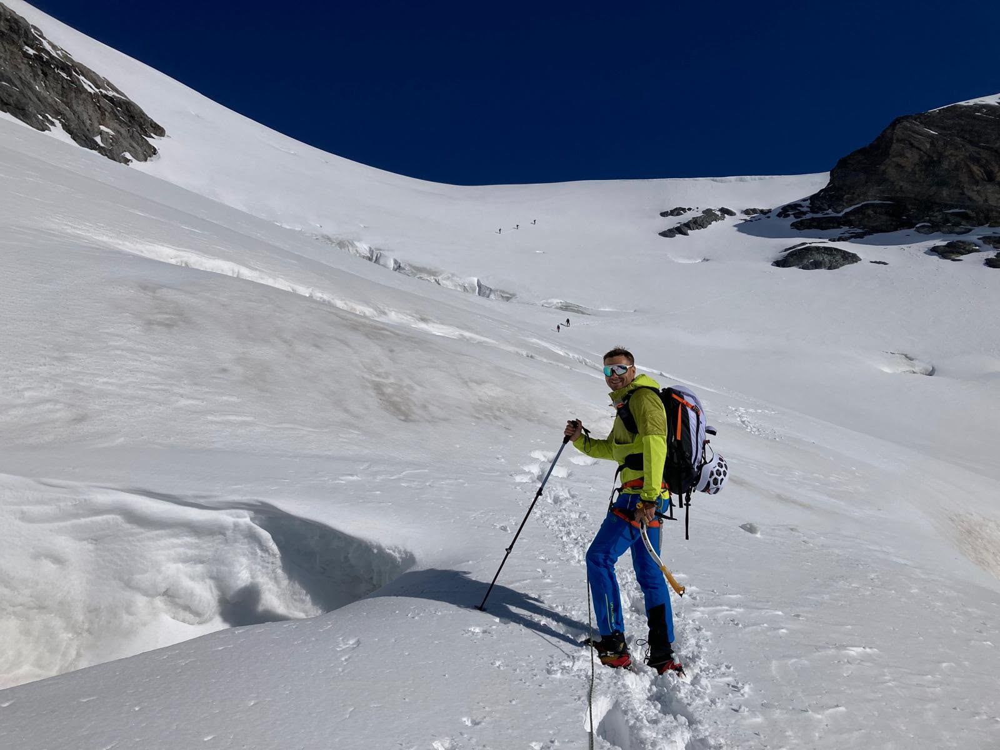

Dimitri Zejna · Manaslu Expedition · August bis Oktober 2027
Partner werdenDie Berge bedeuten Dimitri Freiheit, Ruhe und Abstand zum Alltag.
35 Jahre · Lichtensteig · Vorarbeiter bei Gebr. Mahler AG, Uzwil
Disziplin: Fitness-Instruktor, körperlich vorbereitet und konsequent im Training
Charakter: Hilfsbereit, humorvoll, ehrgeizig und eigenständig
Verbundenheit: Familie, Partnerin und das engste Umfeld geben dem Weg Bedeutung

2026 folgte nach vielen alpinen Touren der erste Siebentausender. Der nächste Schritt führt zum Manaslu.


Persönliches Ziel: den Gipfel ohne zusätzlichen Sauerstoff erreichen.
Kein Rekordversuch. Kein Versprechen. Körper und Bedingungen entscheiden.
Der Weg dorthin dauert Monate: Training, Planung, Akklimatisation und Expedition.
Partner unterstützen nicht nur einen Gipfelmoment. Sie begleiten den ganzen Weg.

Projektbudget: CHF 24'500.–
Werden Sie Teil von Road to Manaslu 2027.